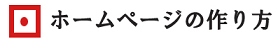

サイトのロゴ画像の作り方
サイトのロゴを画像ではなくテキスト形式で表示する場合、サイト運営者がCSSで指定したフォントで表示するには、閲覧者のPC環境でもそのフォントがインストールされている必要があります。
そのため、テキスト形式では誰にでも同じように表示させるのは困難なため、画像で作成して、どのような閲覧環境でも同じように表示させるのが一般的です。
例えば、このようなロゴ画像を作成してヘッダー部分に設定すれば、どのような閲覧環境でも同じように表示させることができます。

このバナーやロゴを作成するツールとしては、アドビ社のPhotoshopやIllustratorが人気ですが、高額なソフトのため、無料ツールのGIMPなども試してみることをおすすめします。Googleのロゴも初期の立ち上げ当初はGIMPで作成されていたらしく、無料ではあるものの、かなり高機能なツールかと思います。
実際の作り方についてですが、例えば、Photoshopを利用して作成する場合、まずはフォントや色彩を指定してロゴのテキストを記述します。
次に、「フィルター」で各種の加工を施すと出来あがりです。
上のバナーは「押し出し」で処理しましたが、風やグラデーションなどを利用してもそれっぽい雰囲気が出てくると思います。
タイトルのバナーが出来あがりましたら、そのままトップページへ画像でリンクする形で設定しておくとよいでしょう。
ロゴ画像の透過設定について
ロゴ画像を作成する際、背景色は「白色」ではなく、「透過」で作成しておくと文字以外の部分はホームページの背景色で表示されるので違和感がなくなります。
例えば、背景色を「白色」で作成した場合、このように違和感が出てしまいます。
一方、「透明色」に設定しておくと、文字以外の部分がホームページの背景色で表示されて違和感がなくなります。
透過の場合はパソコン上ではシマシマ模様で表示されますので、白色ではないことを確認しておくとよいでしょう。
また、画像のファイル形式はjpgやpng、gifなどで保存することをおすすめします。ロゴやバナーは全ページで使用するため、bmpなどデータ容量の大きい形式は避けるとよいでしょう。
ロゴ画像の大きさは小さめのサイズがおすすめ
サイトにアクセスした際、スクロールせずに表示される範囲はファーストビューと呼ばれていますが、このファーストビューのなかでもページタイトルの部分は真っ先に視野に飛び込んでくる箇所になります。
この見出し部分については、探さなくてもすぐに読み始めることができるよう、できるだけ目の高さと同じ位置で太字で大きく設定しておくことが望ましいです。
けれども、ロゴ画像を大きめに作成してしまうと、記事タイトルの部分が下に下がってしまい、あまり望ましくありません。
見出し部分はサイトの上部から150～250pxあたりの位置に来るように調整することをおすすめしますが、これを逆算しますと、ロゴ画像に割り当てられる高さは50pxあたりまでとなり、残りをグローバルナビゲーションや余白部分にあてることになるかと思います。
閲覧する画面の解像度にもよりますが、あまりに大きなロゴ画像は避けた方がよいでしょう。
検索エンジン対策に画像には「alt属性」を記述する
検索エンジンは画像に書かれている文字までは判別することができないため、単純にテキスト形式で表示した方が「何のサイトなのか？」を検索エンジンに明確に伝えることができます。
そのため、上記のようにサイトタイトルの部分を「画像」で表示する場合、SEO対策の面では不利になります。
もし画像でサイトのタイトルを設定する際、「何の画像なのか？」を示す「alt属性」を記述しておくことをおすすめします。このalt属性は、画像が表示されない場合の代替テキストにもなりますので、単純にサイトタイトル名をそのまま記述しておくとよいでしょう。
会社のロゴ作成にはデザインのセンスが必要
企業や公官庁のホームページを見てみますと「ロゴ＋黒文字テキスト」でバナーが作成されているケースが多いと思います。
例えば、厚生労働省や三菱UFJ銀行、あるいはヤフーファイナンスなどがそうですが、大きな会社や組織のサイトはたいてい「ロゴ＋企業名」で作成されています。イメージでいうと、このような感じになるかもしれません。

けれども、このロゴのアイコンの部分についてはテキストではなく絵になるため、デザインの才能がないと自分で作成するのは難しいと思います。そのため、会社のロゴを作成する際は業者に依頼して作成してもらうとよいでしょう。
最近ではクラウドソーシングで依頼することもできるので、「ランサーズ」や「クラウドワークス」などのサイトでデザインを募集することもできます。
また、作成したロゴは、のちのち名刺やチラシなど様々な用途で使うケースも出てくるため、ロゴを業者に作成してもらう際には、PhotoshopやIllustratorなどの元となるデータも必ずもらっておくとよいでしょう。
テキスト形式でロゴを表示する際のフォント指定
サイトタイトルを「画像」ではなく、「テキストのみ」で設定する場合、CSSでフォントをそれっぽいものに指定しておくとよいと思います。
例えば、このようなポップな文字でバナー画像を作成する場合でも、CSSでフォントファミリーを決め打ちして指定することで、ほぼ似たような形でテキストでも表示することができます。

この場合、CSSで無理やり同じように指定すれば以下の形になるかもしれません。
<h1><span class="sample1">初心者でも簡単！</span><span class="sample2">ホームページの作り方</span></h1>
h1 {width:230px;}
.sample1 {font-size:18px;color:#ad3139;display:block;text-align:right;font-family:"HGP創英角ﾎﾟｯﾌﾟ体";padding-bottom:7px;font-weight:normal;}
.sample2 {color:#000;font-size:24px;font-family:"HGP創英角ﾎﾟｯﾌﾟ体";font-weight:normal;}
ただし、閲覧者の環境でも指定した「font-family」がインストールされている必要があるため、場合によってはうまく表示されないこともあります。できるだけ、デフォルトでインストールされている標準的な「メイリオ」などのフォントを使用するとよいでしょう。
表現力豊かなWEBフォントによるロゴ表示
標準的なフォントでは物足りない場合、WEBフォントを使用すれば、テキスト表示でも表現力豊かなタイトルを表示させることができます。当サイトでもサイトタイトルの部分についてはWEBフォントを利用して表示しています。
例えば、グーグルフォントを利用するとこのような感じになります。
また、WEBフォントはテキストで表示されるため、SEO対策上のメリットがあります。画像ではなくテキストのため、文字を反転させてコピーすることもできます。
けれども、このWEBフォントは主にアルファベットが多く、文字数の多い日本語フォントではあまり普及していません。加えて、アルファベットとは違い、日本語はひらがなやカタカナ、漢字なども含めるとフォントの数が多くなってしまうため、表示の遅延などのデメリットがあります。